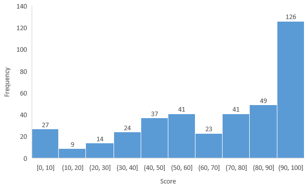

We have uploaded all 170 test cases to ZINC and regraded your latest submissions. Please only check the last report there. Passing all test cases doesn't mean you would get full mark because some penalty may be applied.
Please check your "final score after penalty" HERE. It shows you the total score minus any penalty that needs to be applied. (e.g. late submission penalty, and penalty for using loops which are clearly not allowed)
Please check your "Final PA2 Score" and the score breakdown at the above link. It is calculated by the following formula:
"Final PA2 Score" = "Test case total" (in 100%) + "Other penalty to be applied to test case total" + "Late penalty"
p.s. penalty is either 0 (empty column in the mark checking system) or a negative number
We have reminded you a few times that you must follow our clearly written rules, e.g. do NOT use any kind of loops in any part of your submitted code. For the offenders, out of courtesy, we do not set your PA2 score to straight 0, but we have applied penalty listed in the "Other penalty to be applied to test case total (e.g. for using loops)" column with "remarks".
We will perform plagiarism checking at a later time and marks will be adjusted for those who are caught.
If you want to appeal your grade: you MUST read this whole page and follow the procedure correctly. Your appeal will be dropped otherwise.
Statistics
Statistics (excluding zeros and for submitted works only): mean is 71.5 and SD is 25.3
Histogram: 
Marking scheme
We include the 171 testcases (#0-#170)
The first 12 test cases (#0-#11) are given before the deadline, 159 hidden test cases have been added. You may find out what each test case is in the next section.
We will compile the executables with 3 map sizes:
{Width: 12, HEIGHT: 12}
{Width: 7, HEIGHT: 5}
{Width: 20, HEIGHT: 20}
In Task 1, we try to pick a location and to divide the testcases into 10 points (Robot Energy from 1-10) in 12x12 Map and 20x20 Map. In Map 7x5, as the map is small, we try to include Robot Energy from 1-5; and if possible we will test Robot Energy from 1-9.
We try to separate the test cases to allow you to get the scores in Task 1 as possible.
And prevent the case of losing all marks when your program fails to a test case with a particular location and particular energy cell level.
In Task 4, we accept both recharge case and not-recharge case. So if the test case has two versions, the recharge case testcase will have the "0001" attached at the end of that test case. Either one correct will be treated as correct as that test case.
They are
Non-recharge case: 11 and recharge case: 110001;
Non-recharge case: 162 and recharge case: 1620001;
Non-recharge case: 163 and recharge case: 1630001;
Non-recharge case: 165 and recharge case: 1650001
Here are the score distributions: (No partial credit.)
Task
Test cases
Marks
Number
Weight
Given testcases in Task 1-4 before Deadline
#0-#11
1 mark @
12
12%
Task 1
#12-#131
0.3 marks @
120
36%
Task 2
#132-#146
1 mark @
15
15%
Task 3
#147-#161
1 mark @
15
15%
Task 4
#162-#170
Map 1: 3 3 2 Map 2: 3 2 2 Map 3: 3 2 2
9
22%
Trying the test cases
You can see all the test case results on ZINC in the latest grading report. If you want to try the test case on your own computer, you may do the following.
Download your latest submission from ZINC. We only grade what you submitted last, as mentioned.
Download grader package containing the solution, uncompress the grader package, replace pa2.cpp inside the grader package folder with your pa2.cpp, rememebr to save the changes.
Compile using make. You should be able to see three executables
pa2_test_header1
pa2_test_header2
pa2_test_header3
Check the output and compare that with the expected output here (updated in 9:25pm Dec 3). (or you can just check the ZINC grading report, remember the expected output is on the left).
Please understand that it is not feasible for us (or any single person) to review all the assignment code of everyone to point out where all the subtle bugs are.
The sample solution is useful for you to find out the potential problems in your program yourself by comparing your solution with ours.
Notes and appeal procedure
Runtime errors, crashes, and inconsistent output due to incorrect memory access / memory allocation / memory deallocation / missing variable initialization / missing return values / out-of-bound array access / etc. may not occur all the time on all machines. However, even you may not encounter the error/crash when you test your program, if your program crashes during any of our testing on Zinc, the corresponding test cases will be considered as failed and will receive 0 marks as your code is indeed faulty.
If you somehow get a correct output on your own computer but you get a different output on Zinc, it is very likely your code is faulty. Refer to the previous comments for possible causes. Verify your code to make sure they aren't faulty and won't produce any runtime error before you appeal those cases. Compare your solution with the sample solution yourself if needed.
We can run the test cases again for you (after you have verified them yourself), but all grading shall be done objectively in an automatic and consistent way on the very same machine (the Zinc grading machine, not any other machine including yours or ours). However, if your program crashes or gives unreliable results, it is guaranteed that the problem is somewhere in your code, and marks will not be given. For grading, only the result of your program on the Zinc machine matters.
It is possible that you get a lower mark as we rerun the test cases for you and found additional crashes/mistakes. We rerun all test cases (not just the ones you want to rerun) for all appeals. So proceed carefully at your own risk, not just blindly appeal your grade anyway.
It is mentioned in the assignment instruction that "It is required that your submissions can be compiled and run successfully in our online autograder ZINC. If we cannot even compile your work, it won't be graded." For compilation errors, you get 0 mark. To appeal, you should find out how to fix the compilation errors yourself, and then clearly tell us how in the email. If the fix is simple, we will help you fix it according to your instructions then regrade it with a penalty. The fix should fix compilation errors only and must not change the logic of your program.
Please understand that, for fairness, we usually do NOT allow any student to change their submitted code. On very rare circumstances, say, adding a character will make you get back at least 50 marks, then we may consider it. Even then, a major penalty will apply to the regraded result.
If you are certain that there is a grading mistake after reading this whole page, reading the assignment description/FAQ, and reading and trying the test cases yourself, email to jimw@cse.ust.hk with the following information. Appeals with incomplete information will not be processed.
Email subject must be COMP2011 Fall 2021 PA2 Appeal
Email body contains all of the following:
Your full name as shown on your student ID card
Your HKUST itsc username
Your student ID number
Test cases for which you want to appeal
Justification and any information that is helpful for your appeal case
Do not attach any file (except for images) in the email as they will be blocked by the email server.
Appeal deadline is Dec 7th (Tuesday) 11:59pm.
No late appeals will be processed.
Due to the large number of students that we have, please allow up to 72 hours for your appeal email to be processed and replied. If you do not receive a reply in 72 hours, please re-send your email.
Finalized scores will only be uploaded to Canvas after all appeals are processed.